Contents
clc close all clear all % * Ejercicio M1.1 f = inline('exp(-t).*cos(2*pi*t)', 't'); t = (-2:0.01:2); % M1.1 con función anónima f = @(t) exp(-t).*cos(2*pi*t); figure plot(t, f(t), 'r', 'LineWidth', 2); grid on xlabel('t'); ylabel('f(t)'); title('f(t) = e^{-t}cos(2\pi t)');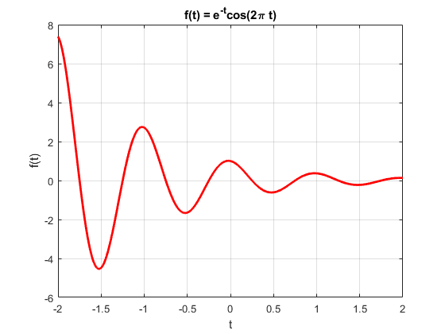
- Ejercicio M1.2
u = inline('(t>=0)', 't'); %escalón t = (-2:0.01:2); u = @(t) (t>=0); figure plot(t, u(t), 'g', 'LineWidth', 2); grid on xlabel('t'); ylabel('u(t)'); title('Escalón con función anónima'); axis([-2 2 -0.1 1.1]); p = inline('(t>=0) & (t<1)', 't'); %pulso unitario t = (-1:0.01:2); p = @(t) (t>=0) & (t<1); %pulso unitario figure plot(t, p(t), 'g', 'LineWidth', 2); grid on xlabel('t'); ylabel('p(t)'); title('Pulso unitario con función anónima'); axis([-2 2 -0.1 1.1]);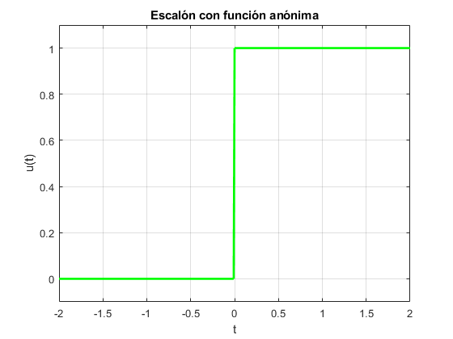 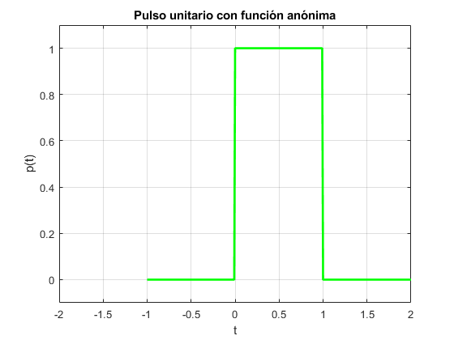
- Ejercicio M1.3
g = inline('exp(-t).*cos(2*pi*t).*(t>=0)', 't'); t = (-2:0.01:2); g = @(t) exp(-t).*cos(2*pi*t).*(t>=0); figure plot(t, g(t), 'b', 'LineWidth', 2); grid on xlabel('t'); ylabel('g(t)'); title('g(t) = e^{-t}cos(2\pi t)*(t>=0)'); figure plot(t, g(2*t+1), 'b', 'LineWidth', 2); grid on xlabel('t'); ylabel('g(t)'); title('g(2t + 1)'); figure plot(t, g(-t+1), 'c', 'LineWidth', 2); grid on xlabel('t'); ylabel('g(t)'); title('g(-t + 1)'); figure plot(t, g(2*t+1)+g(-t+1), 'c', 'LineWidth', 2); grid on xlabel('t'); ylabel('g(t)'); title('g(2t + 1) + g(-t + 1)');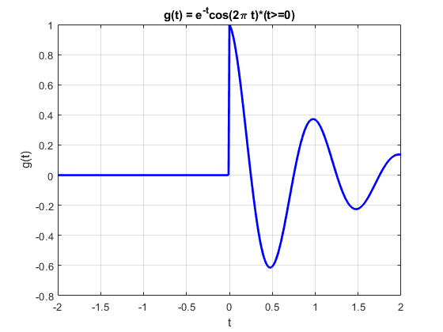 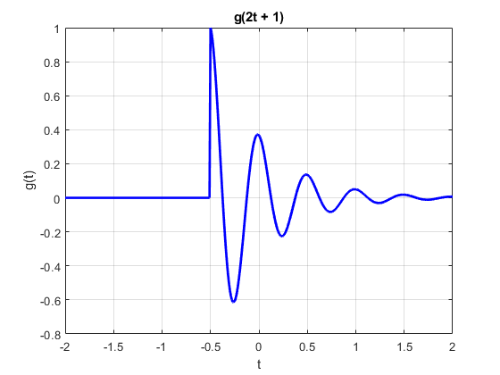 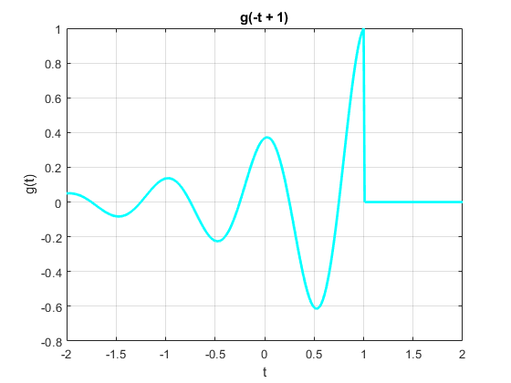 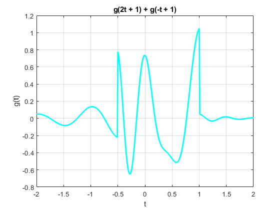
- Ejercicio M1.4
x = inline('exp(-t).*((t>=0) & (t<1))', 't'); t = (0:0.01:1); E_x = sum(x(t).*x(t)*0.01); x_squared = inline('exp(-2*t).*((t>=0) & (t<1))', 't'); E_x = quad(x_squared, 0, 1); g_squared = inline('exp(-2*t).*((cos(2*pi*t)).^2).*(t>=0)', 't'); t = (0:0.001:100); E_g = sum(g_squared(t)*0.001); E_g = quad(g_squared,0,100); % Con funciones anónimas: x_squared = @(t) exp(-2*t).*((t>=0) & (t<1)); E_x = quad(x_squared, 0, 1) g_squared = @(t) exp(-2*t).*((cos(2*pi*t)).^2).*(t>=0); E_g = quad(g_squared,0,100) E_g = sum(g_squared(t)*0.001)
E_x =
0.4323
E_g =
0.2562
E_g =
0.2567
Como se puede notar en este ejercicio, podemos deducir que el uso de inline y las funciones anónimas, es exactamente igual, la única diferencia es la sintáxis, donde f = inline('función','variable') , que sería lo mismo a f = @(variable) expresión .
Ejercicio 5.
Con la señal x(t) mostrada a continuación, graficar:
- x(t - 4)
- x(t/1.5)
- x(-t)
- x(2t - 4)
- x(2 - t)
x = @(t) (-t).*((t>=-4) & (t<0))+t.*((t>=0) & (t<2)); t = -10:0.01:10; figure plot(t,x(t), 'k', 'LineWidth', 2); grid on xlabel('t'); ylabel('x(t)'); title('x(t) = -t.*((t>=-4) & (t<0)) + t.*((t>=0) & (t<2)');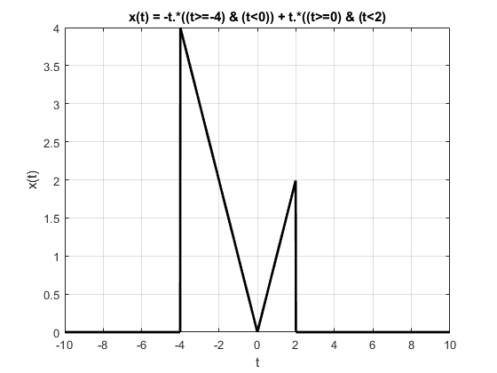
Para la graficación de las señales, únicamente se modifica el argumento de la señal anónima dentro del plot.
figure plot(t,x(t-4), 'm', 'LineWidth', 2); grid on % 1) xlabel('t'); ylabel('x(t)'); title('1. x(t - 4)'); figure plot(t,x(t/1.5), 'c', 'LineWidth', 2); grid on % 2) xlabel('t'); ylabel('x(t)'); title('2. x(t/1.5)'); figure plot(t,x(-t), 'b', 'LineWidth', 2); grid on %3) xlabel('t'); ylabel('x(t)'); title('3. x(-t)'); figure plot(t,x(2*t-4), 'y', 'LineWidth', 2); grid on % 4) xlabel('t'); ylabel('x(t)'); title('4. x(2t - 4)'); figure plot(t,x(2-t), 'g', 'LineWidth', 2); grid on % 5) xlabel('t'); ylabel('x(t)'); title('5. x(2 - t)');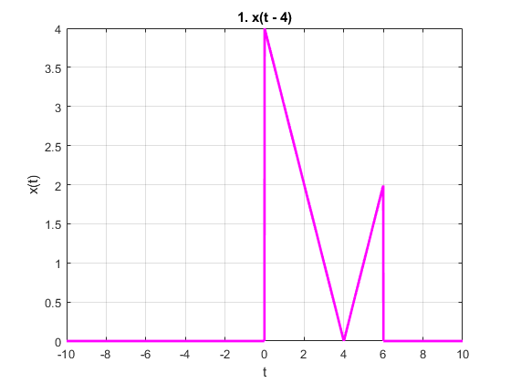 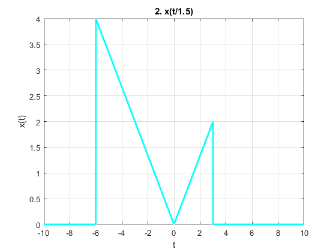 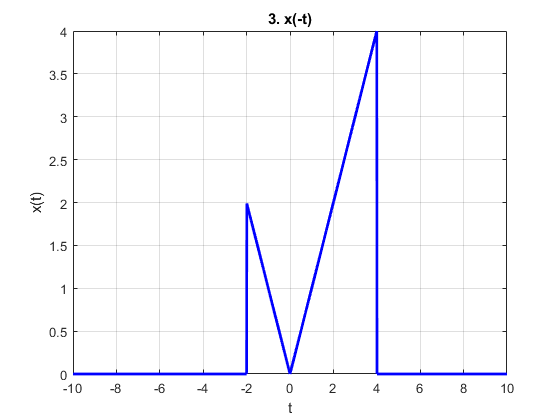 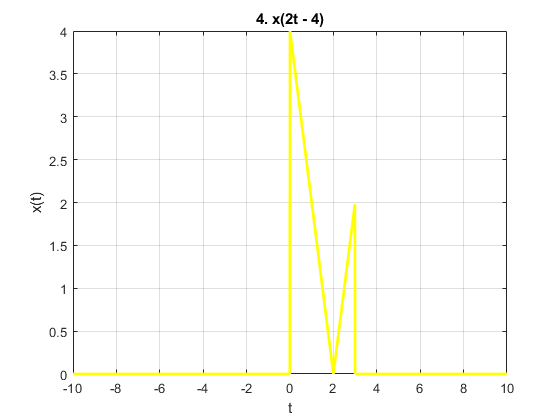 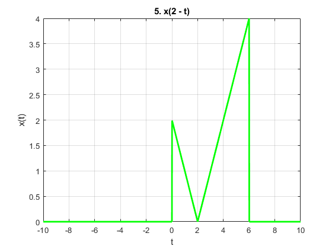